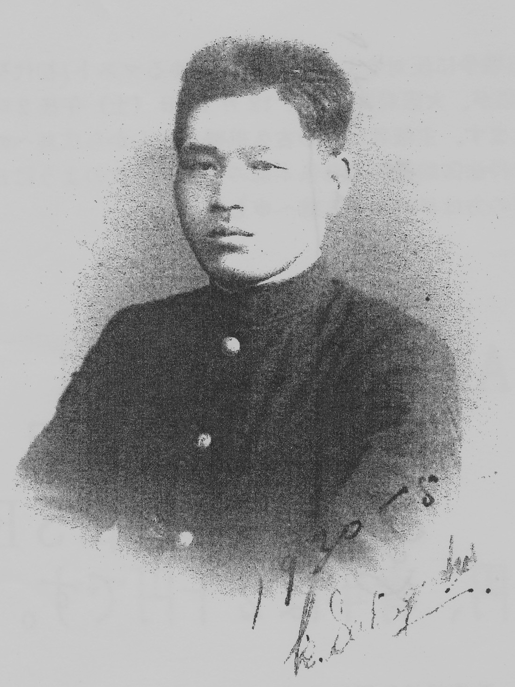
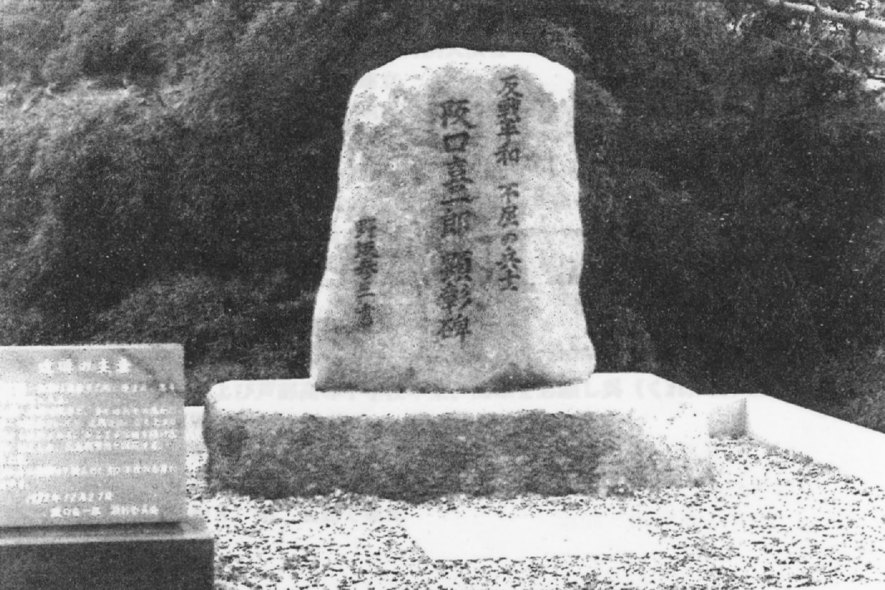
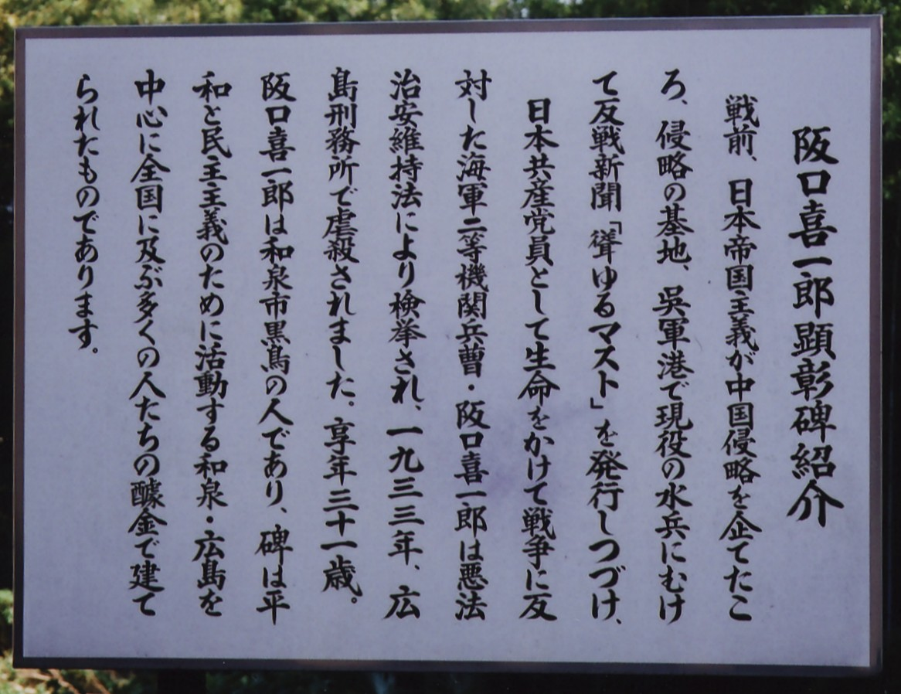
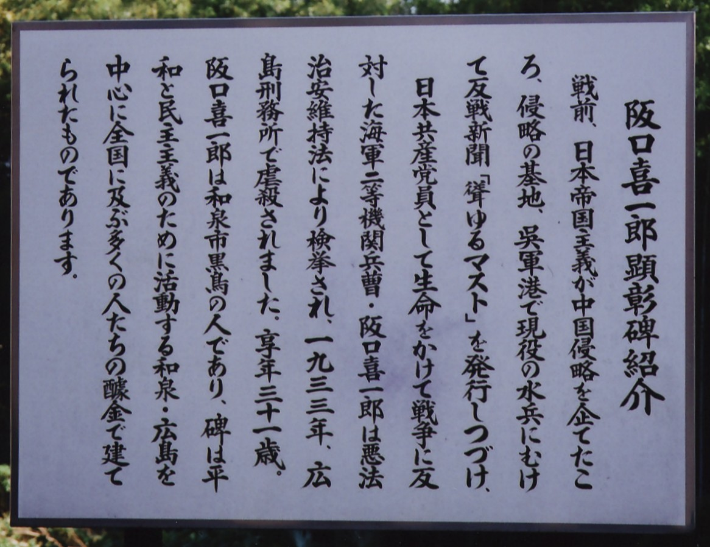
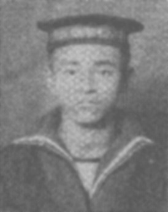

「戦前の反戦兵士とその後」
Ⅱ、「聳ゆるマスト」発行の阪口喜一郎の足跡を追って
ーー広島・呉で顕彰記念碑建立めざして

阪口喜一郎
小栗 勉
はじめに
一九三一年九月一八日、中国侵略戦争の端緒となる満州事変が、
翌年一月十八日には同じ関東軍の謀略による上海事件が起きた。
政府は軍部の圧力に屈し、日本人居留民の権益を保護する名目で横須賀・呉・佐世保鎮守府所属の
海軍陸戦隊二千八〇〇名を上海に急派することを決定。
下旬から二月末にかけ国際都市上海を中心に中国精鋭部隊と激しい戦闘が展開された。
日本の侵略行為により日中双方に多くの犠牲者がでることを憂慮した阪口喜一郎ら反戦水兵が、
中国出兵反対！・ 水兵の待遇改善をせよ！・ などのスローガンを掲げて
「聳ゆるマスト」を創刊したのはこの年の二月中旬のことである。
この現役水兵に向けて発信した謄写版刷り月二回発行の「聳ゆるマスト」は秘密ルートで配布されたのであったが、
末端の水兵たちから次号の発行を渇望されるほど好評で、四月上旬に発行された第四号は創刊四〇部からＩ〇〇部へと飛躍的に発展。
官憲は治安維持法容疑で「聳ゆるマスト」の出所の探索と関係者の割出しに必死になっていた。
このため発行責任者の阪口喜一郎は党中央の指示で妻の梅子を伴い上京することになった。
後任の木村荘重は官憲の追及をかわしながら十月中旬に第五号、下旬に第六号を発行。
新たに構築した秘密ルートで各一〇〇部配布したが、十一月五日に広島市内で逮捕され「聳ゆるマスト」はこの時点で壊滅した。
一方、上京した阪口喜一郎は関東地方軍事部の任務に就いていたが、十一月十五日、上野憲兵隊の急襲により東京市内で逮捕され、
後日、妻の梅子ともども呉憲兵隊留置場から広島刑務所へと身柄を移送され、憲兵と特高から残忍な拷問を加えられたが自白せず、
ハンガーストライキの決行で翌三三年十二月二十七日未決囚として獄死した。享年三一。
こんにちの呉
海上自衛隊は発足当時から呉の旧軍施設を使用して総監部と艦船基地を置き、
いまでは湾岸の民間施設をしのぐほどの用地を有し基地機能は年々強化されている。
戦艦大和の十分の一のミニチュアをメイン展示品とした「大和ミュージアム」が開館したのは
二〇〇五年四月で、それから三年たった時点で入館者は三百万人を突破している。
海上自衛隊はこの盛況ぶりに目をつけ「大和ミュージアム」の、道路を隔てた北側に退役潜水艦を陸揚げし海上自衛隊呉史料館、通称「鉄のくじら館」を本年四月にオープンした。
こうして「大和」建造の地、呉には三年の間に二つの軍事博物館ができたのである。
平和教育を推進している小中学校の教師たちは、呉には平和教育をすすめる施設がない、と危機感をつのらせている。
とくに中学校では毎年、夏休みに入ると五日間の体験学習を各校とも実施しているが、最近の大手企業は金儲け主義が蔓延し、
快く引きうけてくれるのは海上自衛隊だけとなり、各校から合わせて百人前後の生徒が体験入隊する。
昨年六月、呉市を中心として旧郡部の豊田・賀茂・安芸地区を統括する日本共産党広島県中部地区委員会に
「聳ゆるマスト」顕彰碑建立呼びかけ人会議（十二名で構成）が組織されたのはそんな情勢を反映している。
この間ひらかれた呼びかけ会議では、当面の行動として募金の呼びかけ文の作成を民主文学会呉支部長の私（小栗）、
募金と平和教育用のビデオ製作は地元テレビ局のベテランＯＢが担当することなどを決め、阪口喜一郎の生誕地である大阪の和泉市や、
木村荘重と平原甚松が戦後を生きた津和野町などの取材活動をおこなうことを確認した。
〇年四月末までにおこなった調査は、つぎの四ヵ所である。
○七年十一月七日～八日 大阪府和泉市（堺市での懇親会を含む）
○八年三月二八日 島根県津和野町
○八年三月二〇日 広島市安芸区緑井 藤井晴子宅
○八年四月一七日～一八日 大阪府和泉市（大阪北新地に建つ田中ビル視察を含む）
発掘した新事実
＝和泉市にて＝
・自然石を使用した立派な阪口喜一郎の顕彰碑を初めて目にしたこと。
・大阪の関係者内では周知のようであったが、阪口喜一郎など党との接触で重要な役割を果たした田中書店主・田中豊の
大阪での晩年を国賠同盟府本部・柳河瀬精会長の話で知ることができたこと。
・和泉市教育委員会・森下徹学芸員の案内で黒鳥山公園における小学生にたいする平和教育のガイドは、
天皇駐蹕（ひつ）碑→戦争を命令した人、忠霊塔→戦争で死んだ人、阪口喜一郎顕彰碑→戦争に反対した人、と平易にして簡潔なものであり、学ぶところ大であった。
・喜一郎の甥・阪口義喜氏が自宅の前で過去帳を広げながら、喜一郎の納骨は年内に済ませたとの証言を得たこと。
・喜一郎の唯一の直系、同郷の女性との間に生まれた男子が本年で八十一歳になるも健在で、
二人の子・長女と長男は祖父喜一郎の生き方を誇りとし、外部に秘して独自に慰霊を弔っている。
その話を大阪の関係者から聞いた時は感動した。
・北新地の田中ビルは八階建で、いまでも一族の経営で繁盛していること。
＝野村梅子の生涯＝
・喜一郎が獄死したのち、東京在住作家・橋爪健（一九〇〇～一九六四）に弟子入りし、一九三六年に起きた「二・二六事件」の軍靴の響きを枕元できく。
・三十歳のとき、広島市白鳥の実家に居候していたが、出入りしていた十六歳年上の御調町在住の僧侶・住吉春山と再婚。
戦後になり県婦人団体連合会副会長、郡・町の婦人会会長を兼任。八○年代半ばまで務める。
・八三年十二月、喜一郎の御前祭に招待され出席。
・八四年一〇月、広島県「赤旗まつり」に招待され出席。壇上で参加者に紹介される。
・同年十二月、党広島県委員会事務所を訪れ入党の手続き。
・八十歳を過ぎたころから軽度の認知症状がみられ、御調町の病院から実妹の住む広島市内の病院に転院。
・○一年一〇月六日、同病院付属施設の老人ホームで死去。享年九一。
＝津和野町にて＝
津和野町では元町議の岩崎清人宅を訪れ、「聳ゆるマスト」発行責任者の二代目平原甚松、
三代目木村荘重の戦後の生き方について説明を受けた。
両氏については当時の党オルグ三好惣次が自費出版した小冊子『「聳ゆるマスト」と平原甚松』
『「聳ゆるマスト」と本村荘重』が出されており、説明後、岩崎氏から進呈された。
その本の巻末に付された略歴で二人の生涯を紹介することはできるが、とくに新しい発見というものはなく本稿では割愛する。
付言しておけば近接する両氏の墓は立派なもので、墓守は町の有志によって行われている。
＝花谷幸子さんの証言＝
住吉（旧姓・野村）梅子さんの実妹・花谷幸子さんが存命だという連絡が入り、
〇八年三月末、二階堂洋史党中部地区委員長の誘いで藤井晴子宅に赴いた。
晴子さんは幸子さんの次女である。少し記憶力が鈍ってきているからという晴子さんの配慮で
別室にいた今年九十六歳になる幸子さんは、必要上インタビューの途中から同席したが、
物言いは確かで、予想もしていなかった証言を得ることになった。
以下はその概要である。
・金子家は八人の子供が生まれたが長女と次女の梅子、三女の幸子はそれぞれ年が二つひらいている。
梅子の名字が野村になっているのは呉に往んでいた父の妹である野村チサが夫の甚七との間に子供がいなかったので
父・威馬三に許可をもらい梅子を養女とし育てたからである。
・幸子は梅子と仲がよかったので、梅子が喜一郎と結婚して新居で暮らしはじめてからは呉線に乗りよく遊びに行っている。
喜一郎は優しい良い人で可愛がってもらった、金子の家では喜一郎のことをアカじゃいうて悪くいうものは一人もいなかった。
・僧侶の父（威馬三）はときおり朝早く刑務所に行き喜一郎に差し入れをしていた。
喜一郎が死んだときには刑務所から連絡があり、父は一人で大八車を曳いて遺体を引取りに行った。
・当時、梅子はアカじゃいうて周りから言われていたが、家にいるときはミシンを使っても腕が立つし、
小説を読んだり書いたりするのが好きで、なかなか偉い女じゃった。
＝藤井晴子の証言＝
・母幸子が三十八歳のとき夫と別居し、生活していくため広島駅前付近で菓子店を営むことになった。
自分は足手まといになるので小学二年生にときから二年間、住吉春山と梅子が暮らしていた御調町の家で育てられ、
それが縁で二人とは親密な関係となり、晩年の梅子を広島に引取ることにつながった。
伯母の梅子は私を養育してくれただけでなく、菓子店の経営が軌道にのるまで広島にでて手伝ってくれた。
・伯母の梅子は、東京で喜一郎と暮らしていたときのこと、喜一郎が獄死し祖父の威馬三が大八車で遺体を引取りに行ったとき
看守の一人が「意志の強い・人じやった」と言ったこと、作家の橋爪健に弟子入りしたときに体験した
「二・二六事件」のことなどをよく話してくれた。
・梅子が生まれた金子家は広島の白島に在ったが、先祖は広島北西部の川内で、街中から墓参りするときは渡し舟に乗らなければならなかった。
母幸子の夫・花谷武治の実家は賀茂郡の志和にあり、戦時中はそこへ引越していたので原爆に遭わずにすんだ。
・花谷家の霊鑑（過去帳）には喜一郎の名前と戒名が記載してあり、その下の欄外に鉛筆で「梅子の元彼」と書いてある。
・梅子は住吉春山が存命中、自分らは何も社会に役立つことをしてこなかったので遺体は広島大学の「白菊会」に献体しようと二人で約束を交わしており、
春山が亡くなったときは梅子が、梅子が死去したしたときは藤井精子がその志を引受け、
いまは広島佐伯区五日市にある水樹苑に一隅に建つ高さ五〇センチほどの無縁墓群の中で眠っている。
まとめ
本年は「三・一五弾圧」八〇周年、小林多喜二と同年に獄死した阪口喜一郎の没後七五年という節目を迎えている。
治安維持法違反の刃をふりかざして追ってくる官憲の暴圧にひるむことなく、反戦平和の旗を掲げ
「聳ゆるマスト」発行に情熱を燃やした先人たちを顕彰する記念碑を建立しようとする私たちの志は熱い。
だが、その前途には相当額の資金集めという難題が待ち構えている。
物心両面のご支援をお願いするものです。
（出典：「治安維持法と現代」 No.16 2008年秋季号）
Ⅰ、反戦兵士 阪口喜一郎、宮内謙吉、小倉正弘の「その後」
一九三二年十一月に特高によって発見され、二十数名が逮捕されて、
除隊組みは治安維持法によって四名が、現役組は軍法会議で五名が重罪に。
この中の山口という現役水兵は逮捕以後、行方不明になっている。
逮捕者は、激しい拷問にもかかわらず口が堅く「赤旗」一部と「聳ゆるマスト」一部が発見されただけで
圧倒的部分を弾圧から守り抜いた点でも注目されている。
１、 阪口喜一郎らの反戦の闘いは、戦後の平和や民主主義のための運動の中で、
どのように伝えられ、評価されたのか、という問いにも応えることである。
阪口喜一郎の遺骨は、大阪府和泉市の故郷に返されたが、
戦争に反対したということで「非国民」扱いされ、墓は作れなかった。
阪口の墓が建てられたのは、戦後10年目、殺されてから実に23年目のことである。
阪口らの英雄的な闘いは、『聳ゆるマスト 日本海軍の反戦兵士』（山岸一章著）などの本になり、
1982（昭和57）年には、その闘いを記念する顕彰碑が和泉市黒鳥山公園に建てられるのである。
これは、阪口と一緒に闘った当時の仲間や小学校の同級生などの呼びかけにより
全国から集まった寄付金で建立されたのである。
石碑には、「反戦平和、不屈の兵士、阪口喜一郎顕彰碑」と刻まれている。

阪口喜一郎顕彰碑
 現状碑

顕彰碑紹介
現状碑

顕彰碑紹介
２、 治安維持法被害者国家賠償要求運動同盟 林 洋武（山口県本部会長）より引用
「 宮内謙吉は、この中で唯一人山口県出身の現役水兵でした。
彼は一九〇一年十月二十八日に、山口県最北の阿武郡田万崎村（現萩市田万川町江崎）で生まれ、
萩中学校を卒業して海軍に入ります。
軍務の傍ら文学を愛し、満州事変が始まる一九三一年頃より、木村荘重の影響の下で
プロレタリア文学に目覚め、「聳ゆるマスト」の最初からの読者。
事件が起きた時は、三等看護兵曹で海軍十年の経験を持つ最年長者。
軍法会議で懲役三年の実刑を受け、非転向で闘い、山口刑務所に移送され、
一九三四年九月に獄死しています。
懲役三年の懲役刑を受ける木村荘重とは彼が病院に入院するのを機に知り合い闘いをともにします。
彼の義妹になる右田美子は山口県厚狭（現山陽小野田市）出身で派遣看護婦とし
「聳ゆるマスト」の活動や救援活動に奮闘します。
宮内と好意を持ち合いますが、その彼女も救援活動の過労のなかで
宮内に先立つ八ヵ月前に二一歳の若さで命を落とします。
宮内謙吉は国賊と扱われ、郷里の江崎では一家が移住して墓石も明らかではありませんでした。
山岸一章の『聳ゆるマスト』が発行された直後に、共産党の努力で、兄嫁にあたる北畠タミョさんの宅に
写真が残されていることがわかり、それがこの写真です。

宮内謙吉
現役の水兵で懲役六年という最も重罪を受けた岡山県出身の小倉正弘（当時共産党員、
その後改姓して石飛正弘）は戦後日本共産党に再入党、山口県光市で活動していました。
同盟の「不屈」山口県版に当時の思い出を語りましたが、この稿も彼の思い出から多くをとりました。
彼もすでに故人になりました。」
戦前の反戦平和運動 1 へ
戦前2「戦争に反対して、命がけで活動した人たちの記録」へ
トップページに戻る